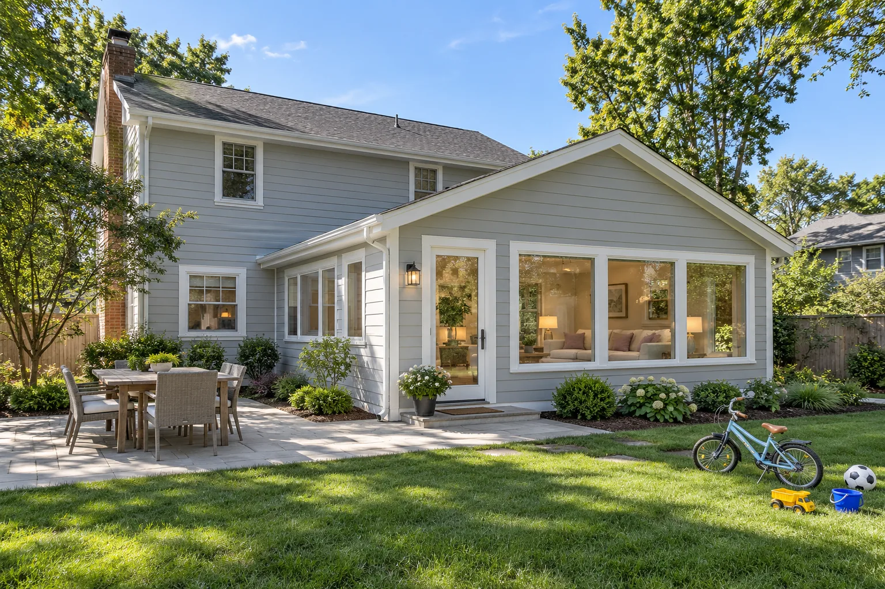

Home / main hero
- Filename
gc8-hero-home.png- Size / aspect ratio
- 2400x1350 · 16:9 · Wide
Ready-to-paste prompt
A finished family-room addition on a light-gray suburban house, seen from the backyard: a simple pitched roof tied neatly into the original house, big garden-facing windows, a small terrace, a bike and a few toys on the lawn, bright afternoon daylight. Look for this site: Home additions for families: white and light-gray siding, green lawns, pale wood floors, white walls with soft lilac and lavender accents. Professional remodeling-portfolio photography, exactly like the project photos on the websites of top design-build firms (Airoom, BOWA, Case Architects & Remodelers, Normandy Remodeling, Neil Kelly). Bright, even natural daylight with the room's own lights switched on; balanced exposure so windows show the trees and sky outside instead of glowing white; true, clean colors; straight vertical lines; wide but not distorted; sharp from front to back. Light, believable styling: fresh flowers, a bowl of lemons or green apples, a few cookbooks, a folded towel, never cluttered. Upscale but real materials with real texture: wood grain, stone veining, tile grout lines, brushed brass. Exteriors on a clear day, or at twilight with every interior light on and the sky still blue, with neat lawn and planting. Contractors, owners and crew members are men, exactly as described in each photo: mostly white, sometimes Hispanic, like the real construction trade. Homeowners are exactly as described. Everyone looks like an ordinary, real person of average build in normal clothes, caught in a candid moment, never a model or actor: real skin, ordinary faces, no styled beards, no perfect teeth. Do not add people who are not described, and do not change anyone's gender, age or ethnicity. Avoid: Moody or cinematic color grading, teal-and-orange, golden-hour glow, dramatic dark shadows, haze or mist, heavy background blur, fantasy perfection, anything that looks like a movie still or an obvious AI image. No text, logos, brand marks, signs, house numbers, readable writing, recognizable landmarks or watermarks. No arches of any kind: no arched doorways, windows, openings or mirrors.